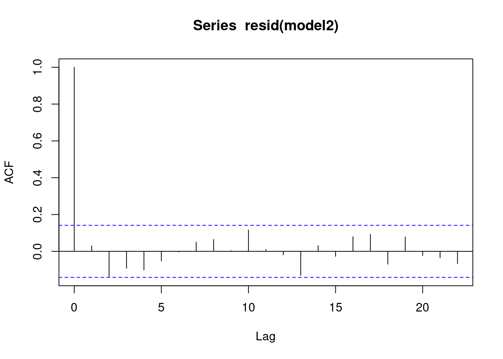

6 rainfall
Last topic on decomposition models, using regression.
rain <- read.csv("/cloud/project/data/rainfall.txt")
attach(rain)
head(rain)## year month monthlength time rainfall
## 1 1979 1 31 1 90
## 2 1979 2 28 2 193
## 3 1979 3 31 3 92
## 4 1979 4 30 4 148
## 5 1979 5 31 5 0
## 6 1979 6 30 6 88plot(ts(rainfall,start = c(1979,1), freq = 12))
modrainfall<-rainfall
for(i in 1:length(rainfall)){
if(rainfall[i]==0)modrainfall[i]<-rainfall[i]+1
}
plot(ts(log(modrainfall),start=c(1979,1),freq=12))
plot(ts(sqrt(modrainfall),start=c(1979,1),freq=12))
time<-as.numeric(1:length(rainfall))
cosm<-matrix(nrow=length(rainfall),ncol=6)
sinm<-matrix(nrow=length(rainfall),ncol=5)
for(i in 1:5){
cosm[,i]<-cos(2*pi*i*time/12)
sinm[,i]<-sin(2*pi*i*time/12)
}
cosm[,6]<-cos(pi*time)
model1<-
lm(sqrt(rainfall)~cosm[,1]+sinm[,1]+cosm[,2]+sinm[,2]+cosm[,3]+sinm[,3
]+cosm[,4]+sinm[,4]+cosm[,5]+sinm[,5]+cosm[,6]);summary(model1)##
## Call:
## lm(formula = sqrt(rainfall) ~ cosm[, 1] + sinm[, 1] + cosm[,
## 2] + sinm[, 2] + cosm[, 3] + sinm[, 3] + cosm[, 4] + sinm[,
## 4] + cosm[, 5] + sinm[, 5] + cosm[, 6])
##
## Residuals:
## Min 1Q Median 3Q Max
## -8.2879 -2.4459 0.0804 2.0217 11.5607
##
## Coefficients:
## Estimate Std. Error t value Pr(>|t|)
## (Intercept) 8.8849 0.2732 32.518 < 2e-16 ***
## cosm[, 1] 2.7150 0.3864 7.026 4.22e-11 ***
## sinm[, 1] 1.8291 0.3864 4.734 4.45e-06 ***
## cosm[, 2] -0.8887 0.3864 -2.300 0.022600 *
## sinm[, 2] -1.2941 0.3864 -3.349 0.000988 ***
## cosm[, 3] 0.5053 0.3864 1.308 0.192623
## sinm[, 3] -0.2137 0.3864 -0.553 0.580835
## cosm[, 4] -0.6180 0.3864 -1.599 0.111514
## sinm[, 4] 0.2062 0.3864 0.534 0.594282
## cosm[, 5] -0.1749 0.3864 -0.453 0.651444
## sinm[, 5] -0.1179 0.3864 -0.305 0.760609
## cosm[, 6] 0.1439 0.2732 0.526 0.599196
## ---
## Signif. codes: 0 '***' 0.001 '**' 0.01 '*' 0.05 '.' 0.1 ' ' 1
##
## Residual standard error: 3.786 on 180 degrees of freedom
## Multiple R-squared: 0.3424, Adjusted R-squared: 0.3022
## F-statistic: 8.52 on 11 and 180 DF, p-value: 5.002e-12model2<-
lm(sqrt(rainfall)~cosm[,1]+sinm[,1]+cosm[,2]+sinm[,2]);summary(model2)##
## Call:
## lm(formula = sqrt(rainfall) ~ cosm[, 1] + sinm[, 1] + cosm[,
## 2] + sinm[, 2])
##
## Residuals:
## Min 1Q Median 3Q Max
## -8.504 -2.386 0.132 2.157 11.344
##
## Coefficients:
## Estimate Std. Error t value Pr(>|t|)
## (Intercept) 8.8849 0.2721 32.655 < 2e-16 ***
## cosm[, 1] 2.7150 0.3848 7.056 3.24e-11 ***
## sinm[, 1] 1.8291 0.3848 4.753 3.98e-06 ***
## cosm[, 2] -0.8887 0.3848 -2.310 0.022001 *
## sinm[, 2] -1.2941 0.3848 -3.363 0.000935 ***
## ---
## Signif. codes: 0 '***' 0.001 '**' 0.01 '*' 0.05 '.' 0.1 ' ' 1
##
## Residual standard error: 3.77 on 187 degrees of freedom
## Multiple R-squared: 0.3225, Adjusted R-squared: 0.308
## F-statistic: 22.26 on 4 and 187 DF, p-value: 4.806e-15anova(model2,model1)## Analysis of Variance Table
##
## Model 1: sqrt(rainfall) ~ cosm[, 1] + sinm[, 1] + cosm[, 2] + sinm[, 2]
## Model 2: sqrt(rainfall) ~ cosm[, 1] + sinm[, 1] + cosm[, 2] + sinm[, 2] +
## cosm[, 3] + sinm[, 3] + cosm[, 4] + sinm[, 4] + cosm[, 5] +
## sinm[, 5] + cosm[, 6]
## Res.Df RSS Df Sum of Sq F Pr(>F)
## 1 187 2658.0
## 2 180 2580.1 7 77.885 0.7762 0.608seas2<-(predict(model2)-coef(model2)[1])[1:12]
plot(ts(seas2),xlab="month",ylab="seasonal estimate")
cbind(1:12,seas2)## seas2
## 1 1 1.7007794
## 2 2 2.2651957
## 3 3 2.7177618
## 4 4 1.7915266
## 5 5 -0.7604333
## 6 6 -3.6037428
## 7 7 -4.8308531
## 8 8 -3.6178537
## 9 9 -0.9403461
## 10 10 1.3385472
## 11 11 2.1130913
## 12 12 1.8263272qqnorm(resid(model2))
qqline(resid(model2))
shapiro.test(resid(model2))##
## Shapiro-Wilk normality test
##
## data: resid(model2)
## W = 0.99356, p-value = 0.5691model3<-
lm(rainfall~cosm[,1]+sinm[,1]+cosm[,2]+sinm[,2]);summary(model3)##
## Call:
## lm(formula = rainfall ~ cosm[, 1] + sinm[, 1] + cosm[, 2] + sinm[,
## 2])
##
## Residuals:
## Min 1Q Median 3Q Max
## -132.28 -43.80 -10.95 30.08 366.72
##
## Coefficients:
## Estimate Std. Error t value Pr(>|t|)
## (Intercept) 99.375 5.487 18.112 < 2e-16 ***
## cosm[, 1] 44.334 7.759 5.714 4.30e-08 ***
## sinm[, 1] 33.646 7.759 4.336 2.37e-05 ***
## cosm[, 2] -13.964 7.759 -1.800 0.07353 .
## sinm[, 2] -21.227 7.759 -2.736 0.00682 **
## ---
## Signif. codes: 0 '***' 0.001 '**' 0.01 '*' 0.05 '.' 0.1 ' ' 1
##
## Residual standard error: 76.02 on 187 degrees of freedom
## Multiple R-squared: 0.2495, Adjusted R-squared: 0.2335
## F-statistic: 15.54 on 4 and 187 DF, p-value: 5.379e-11qqnorm(resid(model3))
qqline(resid(model3))
plot(predict(model3),resid(model3),xlab="predicted
rainfall",ylab="rainfall residual",main="Residual by Predicted Plot")
plot(ts(resid(model2),start=c(1979,1),freq=12))
acf(resid(model2))